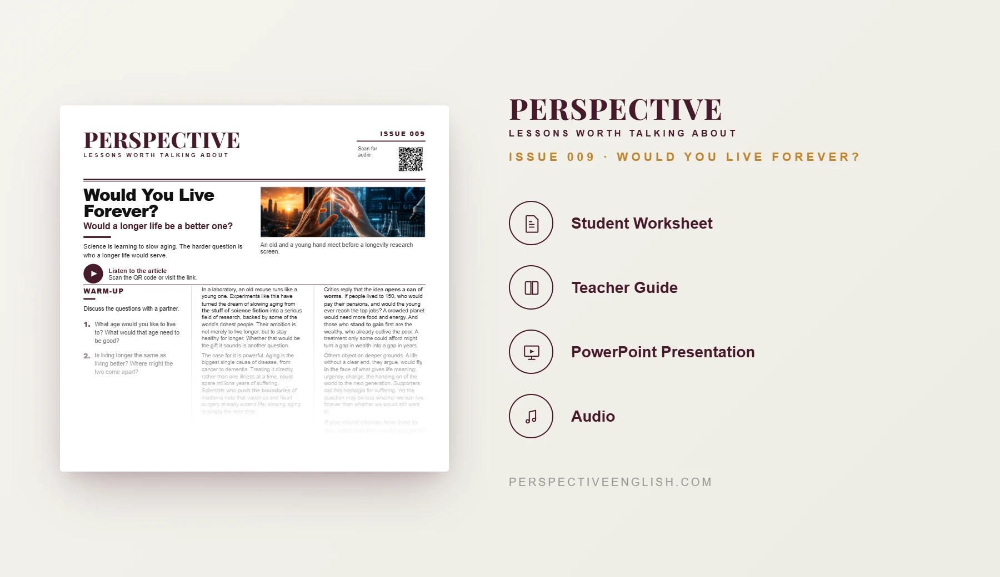

ISSUE 009
Longevity ESL Lesson: Would You Live Forever?
Would a longer life be a better one?
A ready-to-teach C1–C2 ESL lesson examining aging research, life extension and the wider consequences of radically longer lives, including inequality, mortality and social change.
CHOOSE YOUR LEVEL
Collection 01 includes Issues 006–010.

LESSON PREVIEW

ABOUT THIS LESSON
About This Advanced Longevity ESL Lesson
Research into slowing aging has moved from science fiction toward a serious medical field. Supporters see the possibility of reducing disease and suffering, while critics question what dramatically longer lives would do to society.
This C1–C2 lesson examines longevity through inequality, pensions, employment, resources, mortality and access to treatment. Students consider whether extending healthy life would represent medical progress or create new divisions between those who can afford extra decades and those who cannot.
Students predict how life to 150 could reshape six areas of society before designing and defending a rule governing who should receive a proven anti-aging treatment first.
FROM THE ARTICLE
WHAT'S INCLUDED
What's Included in the C1–C2 Longevity Lesson?
- Magazine-style C1–C2 ESL student worksheet
- Original advanced longevity and aging reading with audio
- Advanced expressions and reading comprehension
- Discussion of inequality, mortality and life extension
- If We Lived to 150 critical-thinking activity
- ROLE • PROPOSE • DEFEND anti-aging policy challenge
- 200–250 word argumentative writing task
- Teacher guide and complete answer key
- Ready-to-use classroom presentation
GET THE COMPLETE LESSON
Ready to Teach Would You Live Forever?
Get the complete C1–C2 longevity ESL lesson individually or save with Perspective Collection 01.
Secure checkout and instant digital delivery through Payhip.